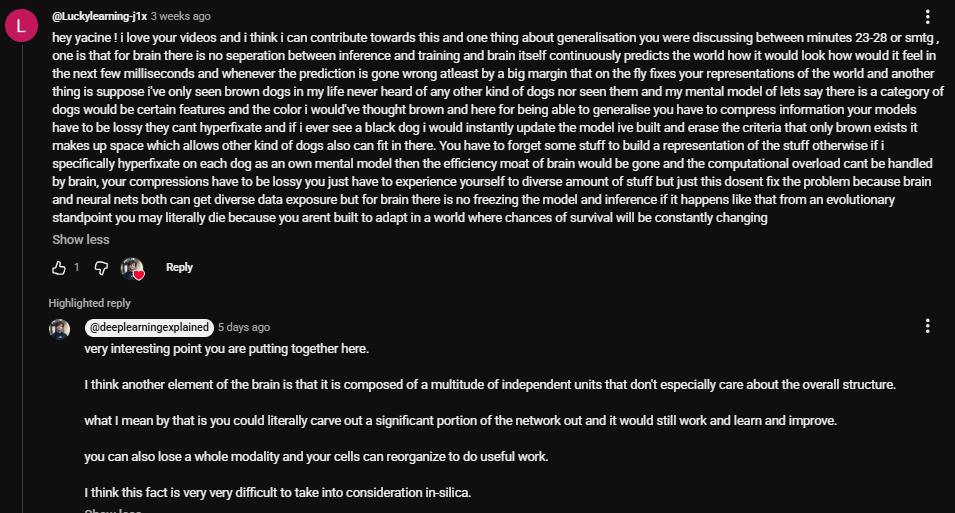

How this started
My high school shut down abruptly in early June 2026. My friends joined another high school. I negotiated with a different one to stay home instead of attending, and I'm enrolled there only so I can write my finals and graduate. The rest goes into my projects, full time, from home, all day, because these needed time and tons of focus for me to learn and build them.
No lab, no mentor, no advisor, no funding, no affiliation to a university, no professor's help. Just me, my laptop, help from LLMs, and rented cloud GPUs when needed. I did this believing that when you want to do something big, you can't take the conventional route everyone took and hope to just be doing it better than the people on it. You have to go unconventional and accept what comes with it.
I've helped my peers get into AI, exposing them to various tools and telling them how capable this stuff is.
Timeline
- March 2026I was building a proof of concept of a “third eye” for visually impaired people: camera detection with distance and voice alerts, with haptic feedback planned. LLMs wrote most of the code. I was also fine-tuning models for physics, using LLMs for the fine-tuning part.
- April 2026I got to know the AI space the way it exists: LLMs, AI agents, workflows, orchestration and APIs.
- May 2026I was having ideas on how we could train models in different ways, and how we could use nature-inspired methods in model architecture. I got to know the physical AI space.
- June 2026Watching NVIDIA GTC Taipei 2026 online ignited my interest in world models, and reading the Cosmos 3 report felt electric. I started working on modular architectures in robotics. Till this point it was mostly intuition and thinking, with negligible math and coding.
- July 2026I started learning the maths.
- August 2026I started learning to code, mostly Python. LLMs still write much of the code in my projects.
- September 2026The actual projects started, from the ideas I’d been having in previous months. I was iterating on them, gaining new ideas and reading papers from alphaXiv.
- October 2026The actual build of these started, the way you see them now. Before that they went through multiple iterations, and some new ideas I didn’t have before started to take root.

Top standout
I tested what a published world-model method says it never measured: whether adapting makes it forget.
JEPA-TTT lets a world model keep learning after its environment changes. Its authors write that their experiments "do not measure retention" or catastrophic forgetting. There was no official code, so I rebuilt it from the paper and added the missing test: silently switch the world back and see what the model still knows. Fine-tuning adapts well, then drops to 0.255 to 0.320 right after the switch, against 0.812 for the model that never adapted. A design of mine that freezes the world model and learns only a small action translator held 0.753 on average, and kept its edge over fine-tuning on every seed. With 16 updates per batch, adaptation also beat the paper's published scores on both shifts: 0.755 against 0.725, and 0.773 against 0.728.
This is 3 seeds on one task, on a different checkpoint, and at the paper's own update rate I scored below it.
Read the repoBy the numbers
- 1,600
- paired robot-policy episodes in one benchmark
- 65
- attacks I logged against my own claim checker
- 9 of 14
- of my own hypotheses killed by criteria I set in advance
- 171
- physics questions, each answered from first principles
How I work. The designing, decisions, hypotheses, experimenting and research come from me. Claude Code helps with implementation, stress-testing and rapid iteration. In physics, I asked all 171 questions myself, and Claude was used for citations, formatting and code execution. In the hard-problem paper, Claude was used in reviewing and helping execute tests, and I hold the responsibility for it.
Where others landed too
Some of what I found, others found independently around the same time
- Turning a model's thinking off explains most of a famous weight-edit gain. An independent audit got there a day before my run. I added GSM8K, the remaining 12.2-point gain, and a layer-overlap measure I found nobody else reporting.
- Lower prediction error doesn't mean better control. Two October 2026 papers report the same gap in JEPA world models: one and two.
- A memory probe needs a baseline. A 15 October paper argues that probe accuracy alone is too permissive, the same point behind my never-trained-task control.
- An LLM can make a better robot brain than an end-to-end policy. On a simulated SO-101 benchmark, an LLM planning over a learned grasping policy scored 83.2%, against about 61% for the best end-to-end models. That's the question I'm building my own arm around.
A conversation
A researcher in the field called my point on generalisation very interesting
On one of Yacine Mahdid's videos, I argued that the brain never separates inference from training. It keeps predicting the next few milliseconds, and a large error fixes its representations on the fly. It also has to compress lossily. If I had only ever seen brown dogs, the first black dog should erase that criterion and make room for every other kind. Keep a separate model of each dog and the brain's efficiency is gone.
Yacine, a computational neuroscientist who runs the channel Deep Learning with Yacine, replied "very interesting point you are putting together here" and built on it: the brain is made of many independent units, so it can lose a large part of itself and keep learning, which is very hard to reproduce in silico.
